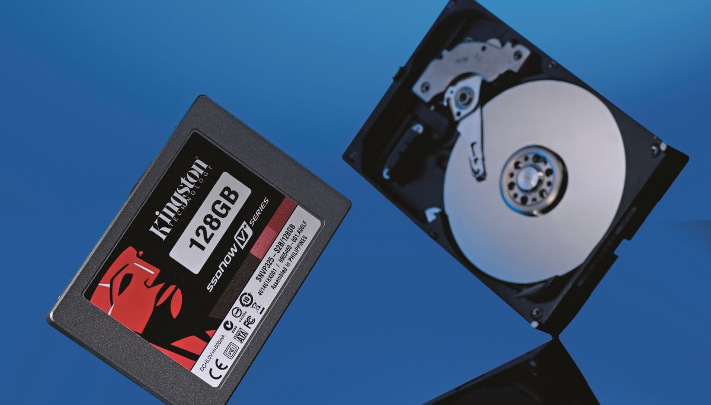

Benefici dela tecnologia SSD
Posted on by Staff
L'avvento della tecnologia SSD per le memorie di massa dei PC, ha introdotto innumerevoli vantaggi, soprattutto sotto l'aspetto delle performance.
Sostituire un vecchio HDD con un nuovo SDD di pari capacità fornisce pochi ma importanti vantaggi. Prima di tutto il PC risulterà più leggere, fattore molto importante per i portatili. A livello prestazionale si avrà una riduzione drastica, fino a 10x dei tempi di boot del sistema operativo e dell'avvio dei principali programmi, come office e outlook.
Leggi tutto Commenti